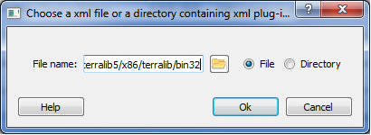

Plugins Manager
The plugin manager are used to control the plugins that can be used in the system. The costumers of this component can perform the following operations:Note that none operations will remove or create physical files, removing a plugin will only remove its reference on plugin manager. The following figure shows the plugin manager component:
Each line presented in the table represents a plugin in the system. Note in the "enabling" column that there are some plugins checked and others are not. These means that the plugins, that are checked, are loaded and the others are not.
Loading and unloading plugins
Loading and unloading plugins changes its original state, to reflect the modification in the list, these items modification are showed in the user interface, marking the lines modified, putting its font as bold. These modifications are not valid until the user press the button apply. After that the "original" state, of the marked plugins changed. The following figure shows some plugins that haves its original state changed.

Important note, when enabling plugins all of its dependencies have to be loaded either. If some dependency was not loaded, the manager will try to recover it of its own list. If this dependency exists in the list, the manager will question the client about the load of the dependency. If the client answer "no" for the question then the plugin will NOT be loaded, otherwise continue asking for other dependencies. If all dependencies are satisfied then the plugin will be loaded. For disabling, if a plugin to be disabled has dependents, all its dependents will also be unloaded, unless the client answer "no" to the question.
Adding plugins
To add a plugin just press the add button shown in the figure below:

When the client press the add button, a dialog with options of addition will be shown. Valid plugins has a manifest file with extension (TerraLib plugin *.teplg). The dialog with options of adding files is the following

The client must choose a directory or a file. A directory must contain a list of manifest files for plugins. Each one will be loaded to memory. Add plugins does not means that these plugins will be loaded. The add operation just adds the plugin to list of unloaded plugins. To enable it, the client must enable it at the list as we said above in the section of loading and unloading. Plugins added are present in font bold.
Removing plugins
To remove plugins, select the plugins to remove and press the button remove shown in the following figure:

To select just click over the line in the table representing the plugin. The plugins to be removed are presented in font italic and as disable fields. Plugins to be removed are presented as the ones in the following figure.

Removing plugins do not remove the physical files, it only remove reference in its list. The manager will stop then unload the selected plugins. Stop the plugin means that it will be unload and acts exact as said above in the section loading and unloading plugins. All its dependents will be unloaded after the client answer "Yes" for unloading questions.
Note that none of the operations will take place until the user press the "apply" button.
Broked plugins
Plugins that are broken are plugins which have dependencies missed. For some reason its dependencies can not be load. This kind of plugin will be showed in the manager without the check enabling button, because it can not be loaded. To revert this situation of a plugin, the client must load all of the dependencies of the plugin.